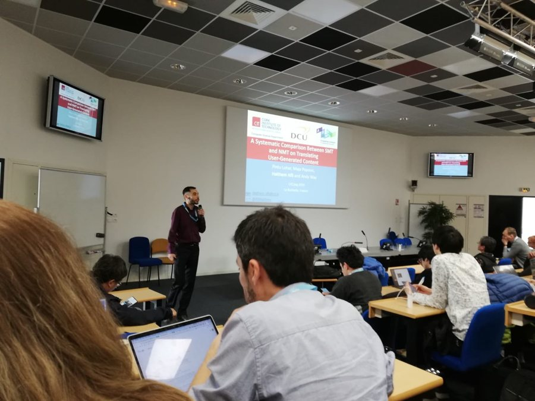
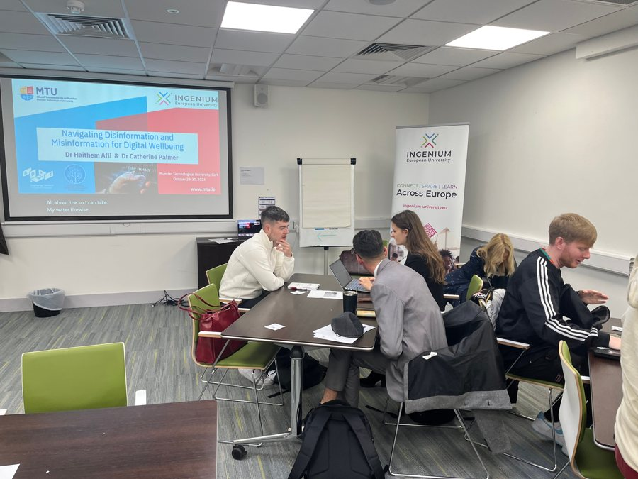
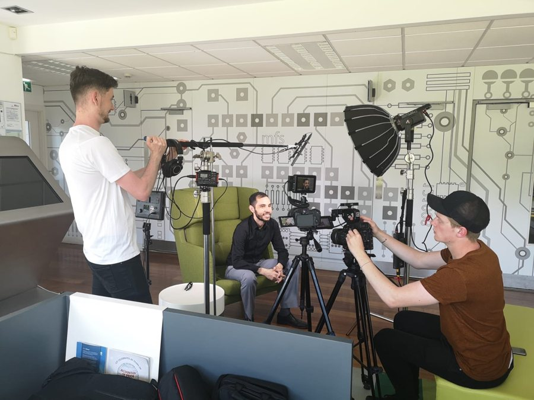
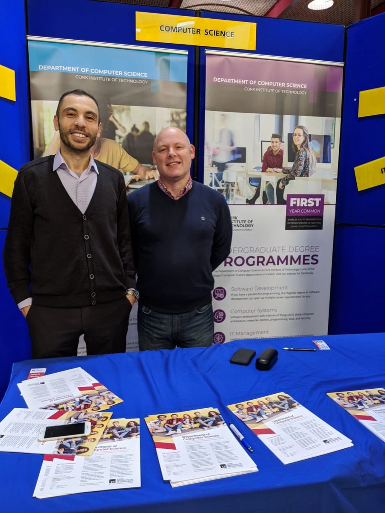
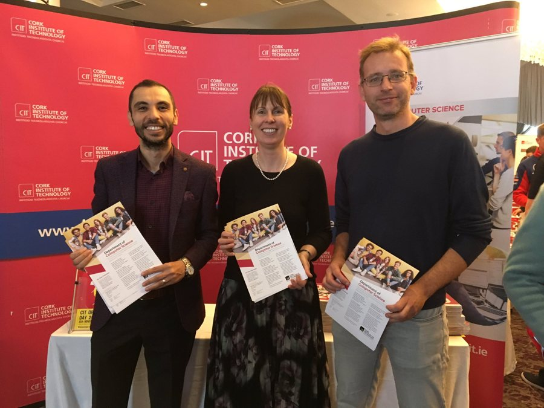

Esta página es una traducción del original en inglés, elaborada con ayuda de la IA y revisada con herramientas automáticas de gramática, ortografía y terminología. Todavía no la ha revisado un hablante nativo; la versión en inglés es la de referencia. Leer esta página en inglés
Docencia
Una docencia que conecta la investigación en IA multilingüe, fiable y centrada en el ser humano con la formación universitaria, la formación profesional y la divulgación.
Pone el acento en la reproducibilidad, la conciencia ética, la interpretabilidad, el Diseño Universal para el Aprendizaje (DUA) y una reflexión crítica sobre la IA en la sociedad.
Docencia universitaria
Programas de la Munster Technological University:
- MSc in Artificial Intelligence (MTU) — Codiseño y puesta en marcha conjunta; imparte PLN, aprendizaje automático y aprendizaje profundo (desde 2018)
- MSc in Computational Biology (MTU) — Codirección de la creación del máster; imparte aprendizaje automático para la biología (desde 2021)
- MSc in Data Analytics (MTU) — Aprendizaje automático aplicado (desde 2019)
Asignaturas impartidas
- Aprendizaje automático
- Aprendizaje profundo
- Procesamiento del lenguaje natural
- Aprendizaje automático aplicado
- Machine Learning in Biology (COMP9085)
La dirección de trabajos de investigación de doctorado y máster figura en la página Dirección de trabajos.
Sitios web docentes específicos
Algunas asignaturas y programas de formación cuentan con su propio sitio web, con materiales de clase y recursos de aprendizaje.
COMP9085
Machine Learning in Biology
Asignatura de máster · Munster Technological University
Sitio web específico de la asignatura de máster COMP9085: un recorrido de doce semanas desde los fundamentos del aprendizaje automático hasta los modelos fundacionales para datos biológicos, de salud y de nutrición, con materiales de clase semanales, prácticas de laboratorio, un catálogo de conjuntos de datos y figuras interactivas calculadas con datos reales en el navegador.
Materiales de clase semanales · Prácticas de laboratorio · Catálogo de conjuntos de datos · Figuras interactivas
Visitar el sitio web del curso «Machine Learning in Biology»
Údarás na Gaeltachta
Building AI Confidence in the Gaeltacht Workplace
Formación profesional · impartida en irlandés
Sitio web de un programa de formación en alfabetización en IA en el entorno laboral, desarrollado para hablantes de irlandés y empresarios de la Gaeltacht e impartido en irlandés. Abarca una introducción a la IA, la IA generativa y los grandes modelos de lenguaje, aplicaciones prácticas en el trabajo diario, la seguridad y el uso responsable de la IA, la alfabetización en IA y el Reglamento Europeo de Inteligencia Artificial, y el papel de la IA en el apoyo a la lengua irlandesa.
Materiales de las sesiones · Ejercicios prácticos · Guía del Reglamento Europeo de IA · Interfaz en irlandés e inglés
Visitar el sitio web del curso «Building AI Confidence in the Gaeltacht Workplace»
Innovación docente y divulgación
- Formación en IA y formación profesional — Formación de directivos en IA, Python y análisis de datos para el personal del Banco Central Europeo (a través de Krisolis).
- Alfabetización en IA e IA generativa práctica — Formación práctica para utilizar la IA generativa y los grandes modelos de lenguaje de forma segura y eficaz en el trabajo.
- Formación en IA en irlandés — Formación en alfabetización en IA impartida en irlandés a empresas de la Gaeltacht, ofrecida por la MTU para Údarás na Gaeltachta.
- Innovación en la enseñanza y el aprendizaje — Sitios web de cursos interactivos y abiertos, con una alternativa textual accesible para cada figura y una distinción clara entre datos reales y simulados.
Conexiones con la investigación
- Machine Learning in Biology se nutre de la investigación en IA para la salud, la biología y la genómica.
- El programa para Údarás na Gaeltachta es un ejemplo de transferencia de conocimiento que conecta la investigación en IA multilingüe y consciente de la cultura y en IA responsable con la alfabetización en IA en las comunidades de habla irlandesa. Véase también Innovación e industria.
Docencia y divulgación en imágenes




